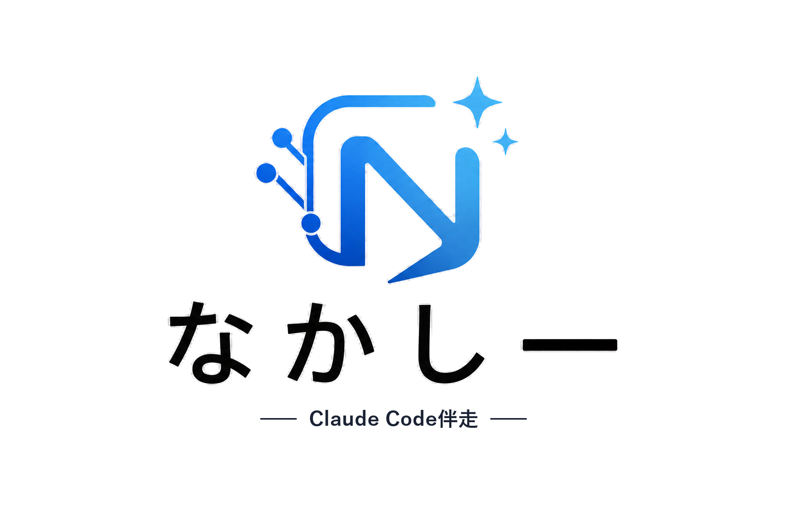

配色・余白・文字量などの実践ルール30個と、色の数・扁平率など「知っておくべき一般常識」の早見表、型（テンプレート）6種をまとめました。印刷して手元に置いておきたい方は、右上のボタンからPDF保存できます。
迷ったら、まずこの数字に収まっているか確認してください
場面ごとに「箱の並べ方」を先に決めておくと、AIへの依頼も迷わなくなります
作業に詰まったとき、検索して該当箇所だけ確認してください
パートA〜Cの内容をすべて盛り込んだ、スライド1枚をAIに作らせるための完成プロンプトです
下のグレーの箱の中身だけが、ClaudeCodeやChatGPTにそのまま貼り付けるプロンプト本文です。この説明文（オレンジ点線の枠内）はコピーされません。
プロンプト内で ｛ ｝ のように囲まれている部分が、あなた自身の内容に書き換える必要がある箇所です。コピーしたあと、｛ ｝ごと具体的な内容に置き換えてから使ってください（｛ ｝の記号ごと消してOKです）。